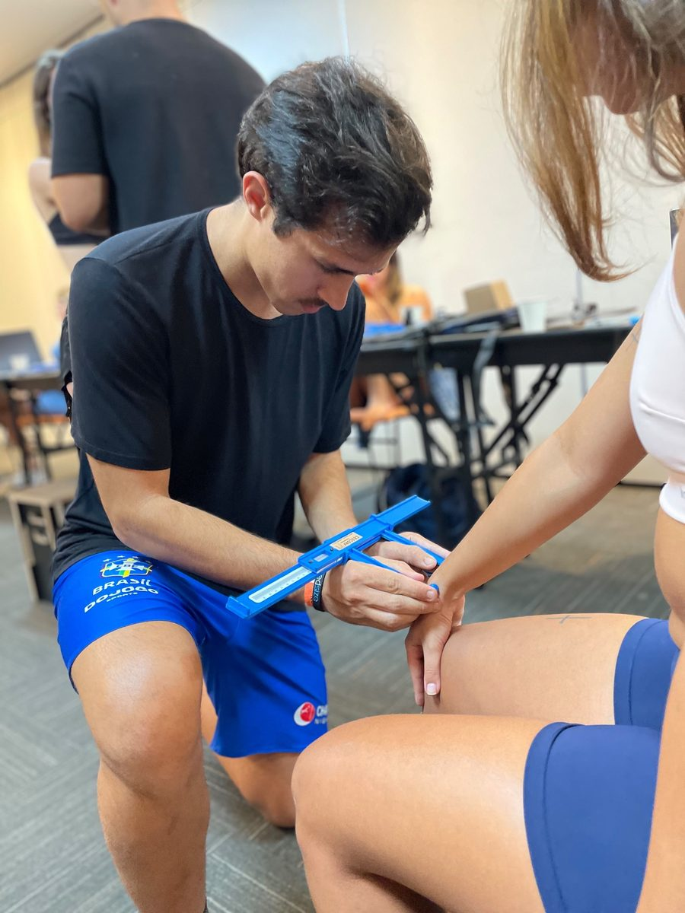
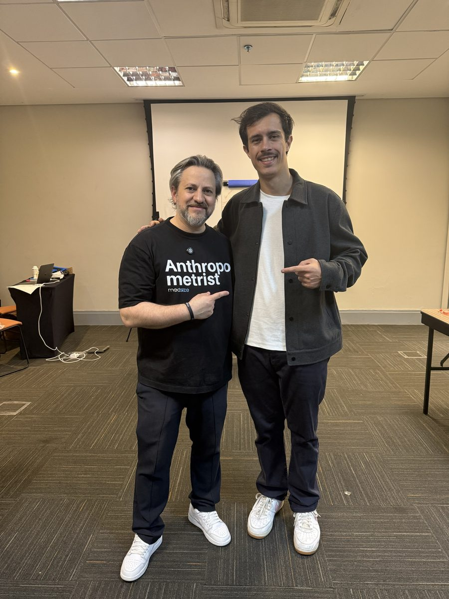
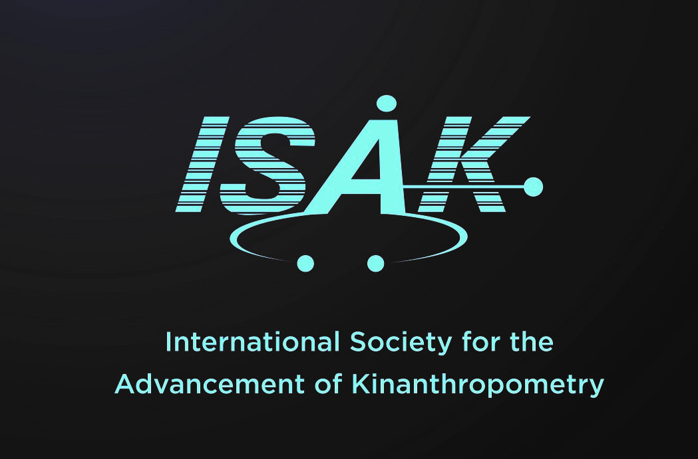

Antropometrista ISAK Nível 1
Curso com o Paulo Sehl, que renovou os métodos das minhas avaliações. A ISAK (International Society for the Advancement of Kinanthropometry) é a certificação internacional da técnica.
A antropometria vai além de medir: ela exige atenção aos detalhes, padronização e interpretação correta dos dados. Cada marcação, cada dobra e cada medida ajudam a entender melhor a composição corporal e a relação com esporte, saúde e performance.
O que pratico
- Marcação dos pontos anatômicos antes de qualquer medida.
- Medidas com protocolo padronizado: no perfil restrito, 4 medidas básicas, 8 dobras cutâneas, 6 circunferências e 3 diâmetros ósseos.
- Registro de cada medida e repetição quando o protocolo pede, para reduzir o erro e garantir consistência.
- Leitura e organização dos dados para comparar medidas e entender melhor o contexto do corpo e da performance.